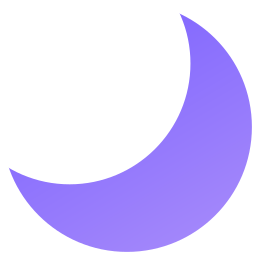
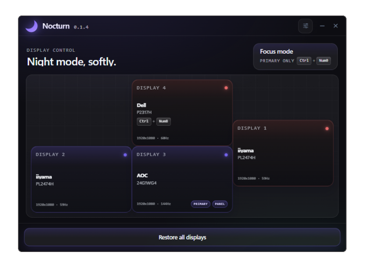

Pure black output
Compatible OLED
Pure black on the panel, without the glow of a dimmed screen.
Pure black
Made for night setups

NocturnWindows screen blackout app for multi-monitor setups
Nocturn is a lightweight Windows utility that blacks out selected monitors instantly without changing your desktop layout.

Why people use it
Pure black on the panel, without the glow of a dimmed screen.
Windows stay where they are. Your monitor layout does not move.
Small tray app. Pick a screen, toggle it, move on.
Set your own shortcuts and see which apps each overlay is hiding.
How it works